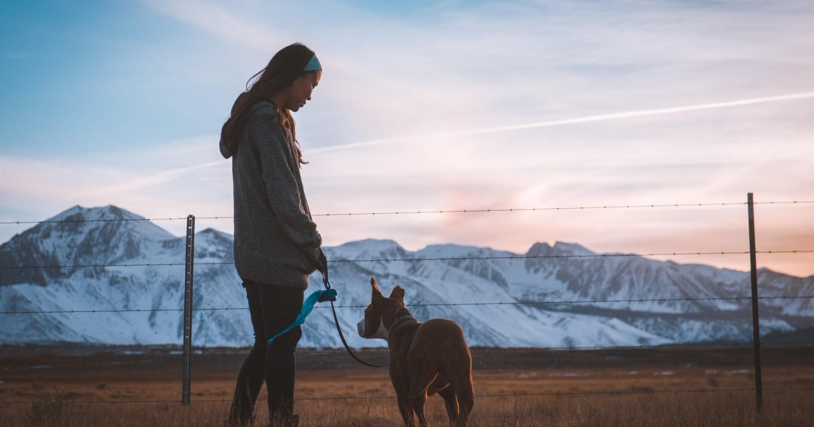

Quando o cão foge com frequência, a prioridade na escolha da coleira GPS muda: preço baixo e design bonito importam menos do que cobertura de rede confiável e um recurso de cerca virtual que realmente avisa a tempo. Este guia foca no que priorizar nesse cenário específico.
Modelos Bluetooth têm alcance curto — inúteis se o cão já está longe de casa quando você percebe a fuga. Para esse perfil, um modelo com chip de operadora, mesmo com mensalidade, tende a valer o investimento, porque a cobertura de rede móvel é o que garante localização mesmo a quilômetros de distância.
entenda a diferença técnica entre bluetooth e chip de operadora
Para cães com histórico de fuga, o alerta de cerca virtual (geofence) é o recurso que faz a diferença entre agir em minutos ou descobrir a fuga horas depois. Vale testar a configuração antes de confiar nela — muitos alertas falham não pela tecnologia, mas por notificação desativada no celular ou perímetro mal desenhado.
como configurar corretamente a cerca virtual
evite os erros mais comuns de configuração
Porte pequeno não significa menor tendência a fugir — o comportamento está mais ligado a temperamento e estímulo do que a tamanho. Se o seu cão é pequeno e foge, equilibre o recurso de cobertura ampla com o peso leve do dispositivo.
cães pequenos também fogem — o que considerar
Fuga recorrente também pode ter causas comportamentais — ansiedade de separação, falta de estímulo físico e mental, ou período de cio — que a coleira GPS não resolve sozinha, apenas ajuda a localizar o cão depois que ele já fugiu. Se as fugas são muito frequentes ou o cão demonstra sinais de sofrimento associados a elas, vale conversar com um adestrador ou veterinário comportamental para investigar a causa, além da solução tecnológica.
Para cão que foge muito, a escolha certa geralmente prioriza cobertura de rede ampla e cerca virtual bem configurada, mesmo que isso signifique aceitar uma mensalidade. A coleira GPS resolve a parte de "encontrar rápido" — mas se a fuga é recorrente, vale investigar também a causa comportamental por trás dela.
volte ao guia completo de coleira GPS para pet
Escrito pela Equipe Smart Pet Gadgets, redação especializada em comparativos de produtos pet no mercado brasileiro. Veja nossa política editorial e como verificamos as fontes citadas neste artigo.
🐾 Confira o preço e a disponibilidade atual no Mercado Livre.
Ver no Mercado Livre →Link de afiliado: podemos receber uma comissão por compras feitas através deste link, sem custo adicional para você.
Nildo Alves — curadoria de produtos pet no Smart Pet Gadgets. Testa e pesquisa produtos para cães e gatos, cruzando especificações de fabricante com boas práticas veterinárias e dados de mercado.
Sobre o Smart Pet Gadgets · Contato · Política editorial e de afiliados